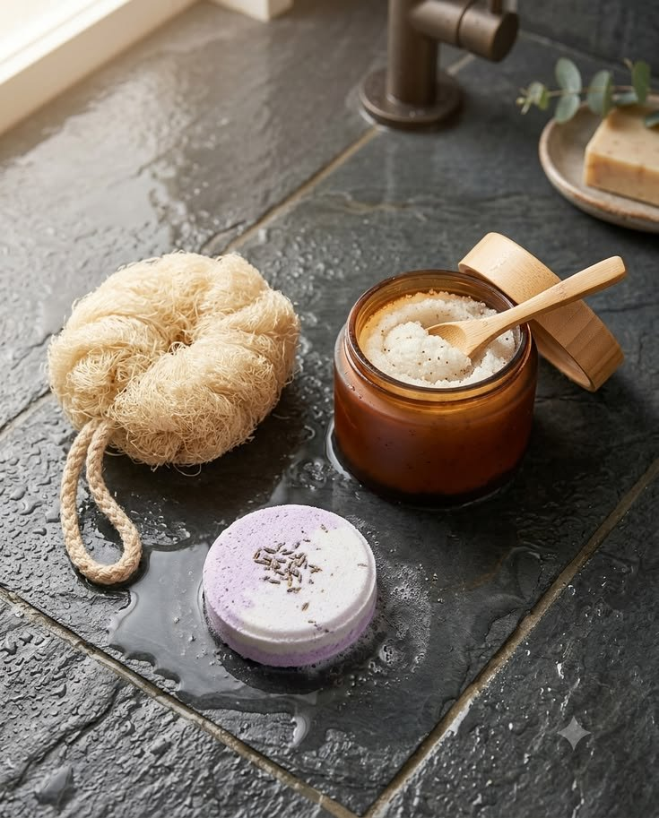
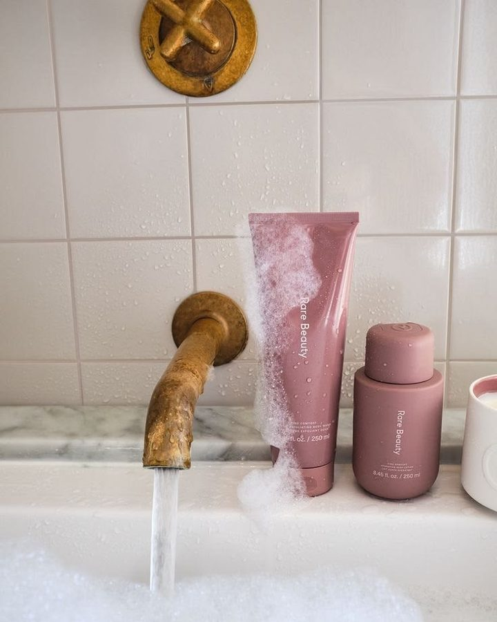
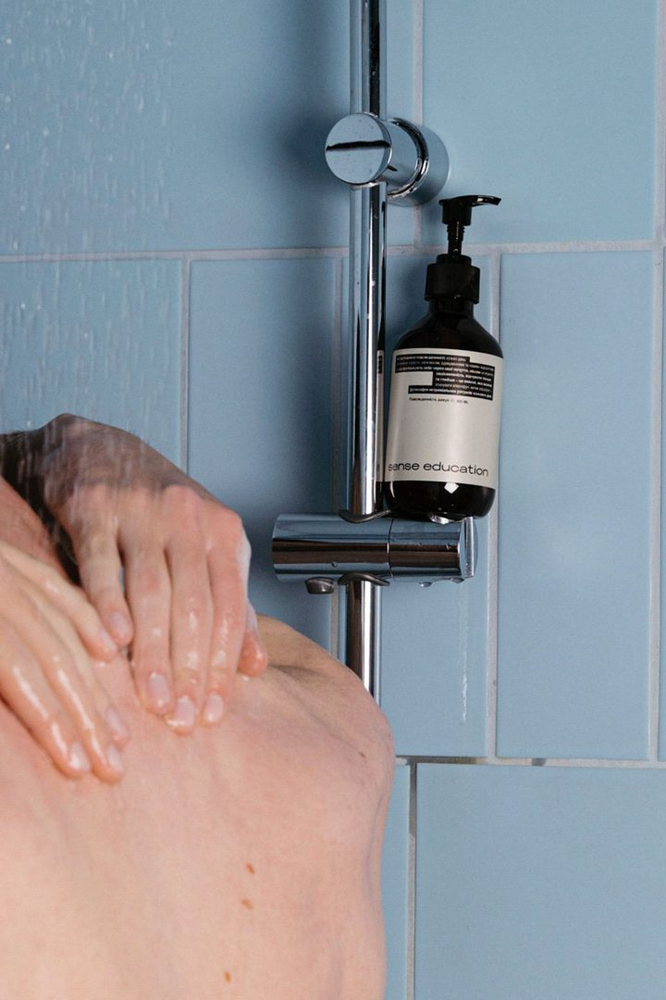
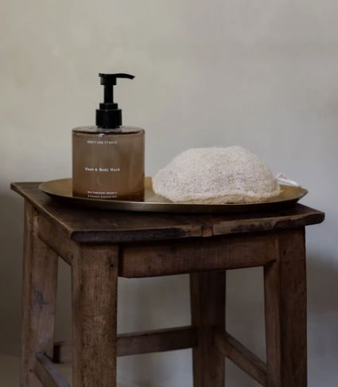
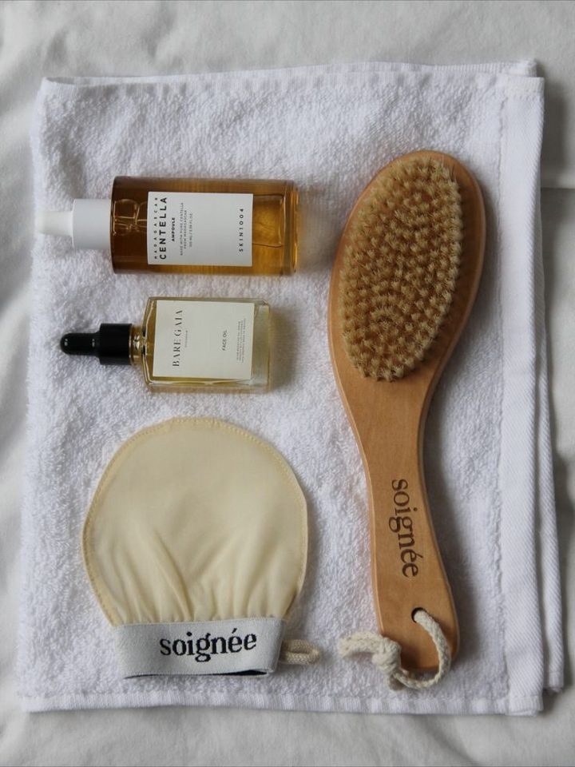
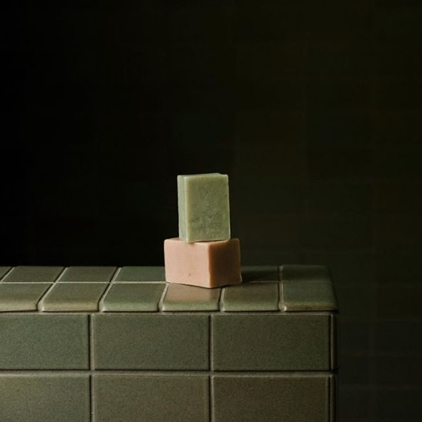

Field notes
The farm by season, the two-minute hammam, and one real question a week, answered by the founders.

Field Notes · 4 min readHarvest week
Harvest week
at Field 7.
What September looks like on a Nile Delta farm: picking at first light, the long tables in the shade, and why we wait for the skins to turn.
Read the note
Why every 60 days: how subscribing works
The fading tag, the day-50 WhatsApp, and how to skip, pause or cancel in a tap.

How to scrub your own back
One body area, two minutes, one strap.

Yes, it’s a vegetable
No, don’t cook it. This week’s question, answered.

What Grade A actually means
Fibres per square centimetre, counted.

The soap that waits
Why Sabon Ghar is cured slowly, and what laurel does.
The weekly deep scrub
The mitt, warm water and ten slow minutes on a Friday.